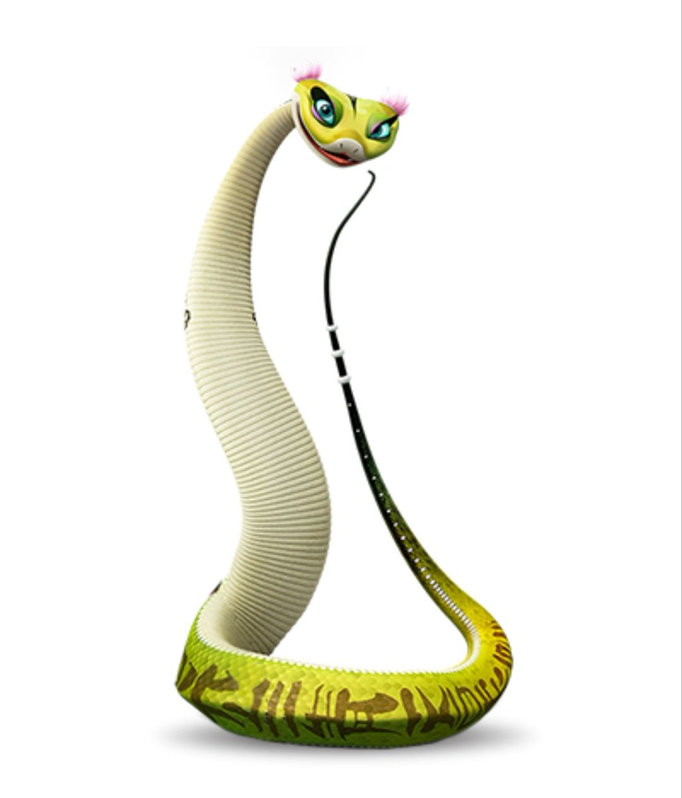

| aaaaaaaaaaaaaaaaaaaaaaaaaaa | Mestre Víbora |
aaaaaaaaaaaaaaaaaaaaaaaaaaa |
|---|
| Personagem do filme Kung Fu Panda, é uma doce e de boa índole víbora verde. |
|  |
| Características |
A personagem Víbora, integrante dos 5 furiosos, apresenta o estilo de luta da serpente no Kung Fu. Através da flexibilidade e da fluidez dos movimentos, a serpente “envolve e anula o oponente". A defesa conta com movimentos que entrelaçam com os de seus adversários, enquanto o ataque busca por ângulos inesperados. A técnica possui uma marcialidade própria que a qualifica como um estilo carregado de ataques e contra-ataques rápidos, muitas vezes com os dedos esticados, mirando em pontos sensíveis do corpo. Pode apresentar também um formato de punho com os dedos juntos (imitando a cabeça de uma cobra). Nesse punho, a intenção de defesa com as “costas” da mão é bastante característica. A marcialidade da Serpente não se resume ao formato do punho (o que acontece em praticamente todos os estilos que fazem referência a animais). |